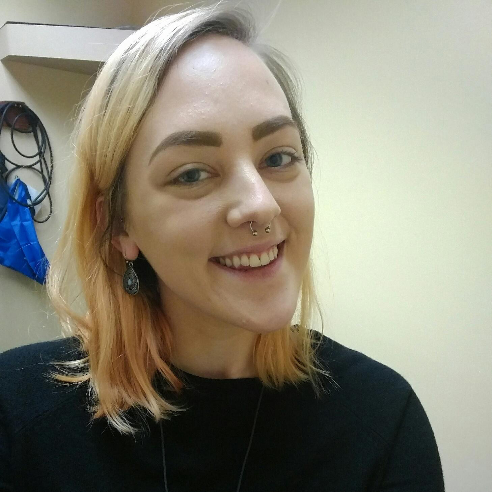

Location
Klehm Arboretum & Botanic Garden
2715 South Main Street
Rockford, Illinois 61102
ABOUT KLEHM ARBORETUM
Klehm Arboretum and Botanic Garden is a nonprofit organization located in the heart of west Rockford. The arboretum itself is a 155-acre site and was established in 1910 as Rockford Nursery by landscape architect William Lincoln Taylor. In 1968, the Klehm family bought the nursery from Taylor, but donated the land to the Winnebago County Forest Preserve District in 1985 with the stipulation that the land be maintained as an arboretum.
Currently, Klehm Arboretum houses over 500 unique species of trees, shrubs, and vines. In addition to these “woody plants,” Klehm also features 150 different kinds of perennial flowers. All of this flora can be seen throughout our wedding, as the entire site is open for visitor use, free of charge, throughout the night. If you wish to visit Klehm any other day of the year, admission is only six dollars for adults, and the site hosts several events annually including their Winter Wonderland Party, Arbor Dash 5K, and Annual Plant Sale.
KLEHM AND YOU
Make sure to wear practical shoes! Or don’t; we’re not your mother. The ceremony will be held in the fountain garden pavilion, and your seats will be placed in the grass. Also, make sure to dress for the weather! If it’s raining, we will have to move everything inside, but, given sunshine, we will be outside no matter the temperature for the ceremony.
Itinerary
4:00 p.m. cocktail hour in the visitor's center
5:00 p.m. ceremony in the fountain garden
6:00 p.m. reception in the visitor's center
Wedding Party
HANNAH RODENBECK
Maid of Honor
Hannah is Britta's younger sister. She is 22 and daughter to Tad and Susan Rodenbeck. She graduated from Auburn High School in 2012 and currently attends Rock Valley College. She will graduate from RVC in December 2016 with an Associate's of Arts degree and hopes to attend Northern Illinois University (her whole family did, why not add another Rodenbeck to the alumni list) in the CLCE department. The outdoors and warm weather are all Hannah needs to be happy. Rock Cut State Park (in Rockford, Illinois) is a second home to her, and she can't wait to be back there in the spring. Hannah once peed her pants while walking home from the bus stop. Embarrassing.
SAM ISSA
Best Man

Sam was Luke's basement-dwelling roommate in college. He is an operations systems analyst at a manufacturing company and the founder of Sam's Laws (somewhat similar to Murphy's Laws, but not really). He is also a good samaritan, a washed-up athlete, a paper-cut survivor, and an especially gifted napper. Sam has a Bachelor's degree in accounting from Northern Illinois University and is currently in school working towards his Master's in management information systems. He likes dogs, cats, community service, running, cars, food, trying/learning new things, and all things technology. He dislikes college textbooks, sitting still, bad budgets, and seedless watermelons (they just aren't natural).
MARISSA GIANNANGELI
Bridesmaid
For those of you who don’t know her, this is Marissa. After graduating from Auburn High School, she attended Loyola University of Chicago. She is now following her dream of serving others and going back to school to become an Occupational Therapist. She enjoys primitive camping, a good book (A Song of Ice and Fire is her new Harry Potter), and amateur dog photography. Never ask her to show off her dance skills, because they are nonexistent. Bring her a glass of wine, and you are sure to impress her. If she could go back in time, she would find a covered wagon and become Laura Ingles Wilder. How does Marissa even know Britta? Thirteen years of sleepovers, Key Club, and breakfasts at Stockholm Inn after becoming instant friends at West Middle School.
JOHN LARSON
Groomsman
John Larson, AKA Vanilla Fudge, graduated from Northern Illinois University in August 2014, and he is currently an Assistant Rental Manager for Penske Truck Leasing in West Chicago. He enjoys golfing during the summer, long walks on the beach, traveling, watching the Cubs win the World Series (HAH!), watching the Blackhawks win the cup, watching the Packers win the Lombardi trophy, being with friends, wearing his robe, and watching CNN. He dislikes the White Sox, traffic, humidity, bananas, snowdrifts, and flat beer. He is very excited and honored to be a part of Luke and Britta’s special day, and he cannot wait to see what life has in store for them.
CHASE WESSMAN
Bridesman

Chase was Britta's roommate and partner-in-misery in college at NIU. They also majored in psychology together. Chase grew up in Rockford and graduated from Guilford High School in 2009. He then continued on to Rock Valley and Northern Illinois, graduating with a Bachelor's in psychology. He is currently back at NIU pursuing a Master's degree in Computer Science. Chase can kick any one of your butts at Super Smash Bros Melee and plays way too many video games in general. He spent the better part of a year hiding a severed leg limb ("Greg the Leg") in Britta's room, causing her life expectancy to drop several decades.
MATTHEW ZABEL
Groomsman
Having worked together with Luke for almost a decade as a Pace Cadet, Zabel, sometimes known by his street alias Razorblade 2.5, is studying Math Education at Northern Illinois University. He excels in the areas of stocking shelves, maximizing napping time, and comic books. Zabel enjoys procrastinating, playing PS4, and napping. He loves napping. It’s his favorite hobby. He also loves an ice cold Coors Light (the mountains better be blue), and if he’s feeling fancy you may catch him sipping on a Jameson and Ginger Ale on the rocks. Zabel hates birds, commuting to NIU, and days he can’t nap. This pretty much sums things up. Oh, and sorry ladies, he’s taken.